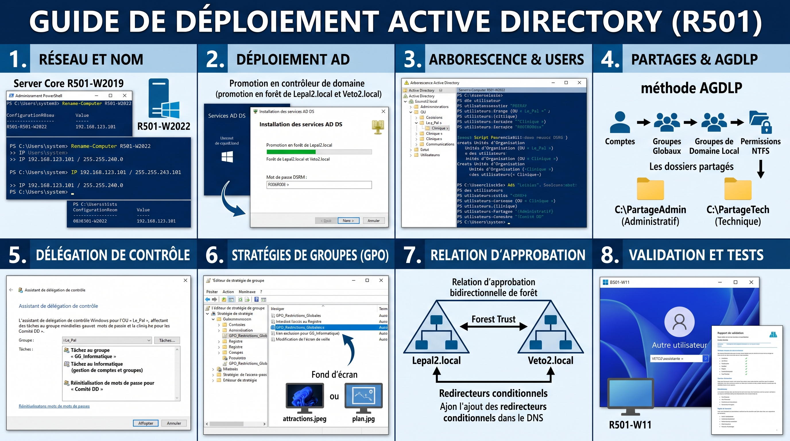

Documentation Active Directory
Bienvenue sur la documentation technique officielle documentant un déploiement Active Directory multi-forêts en environnement de production.

Partie 1 : Préparation et Réseau
La phase de préparation fige l'identité réseau des serveurs avant la promotion Active Directory. Une erreur sur le masque ou la passerelle compromettra la communication entre les différents pôles lors de la mise en production.
Méthode 1 : Interface Graphique (Siège Social - SRV-AD-01)
Ce serveur nécessite une configuration complète via les menus de Windows pour héberger le domaine domaine-a.local.
- Renommage de la machine : Appuyez sur les touches Windows + R, tapez
sysdm.cplet appuyez sur Entrée. Dans l'onglet Nom de l'ordinateur, cliquez sur le bouton Modifier. Effacez le nom généré aléatoirement, tapez exactementSRV-AD-01, validez par OK et fermez la fenêtre en ignorant la demande de redémarrage immédiat. - Accès aux connexions réseau : Appuyez de nouveau sur Windows + R, tapez
ncpa.cplet validez. Faites un clic droit sur votre carte réseau et sélectionnez Propriétés. - Configuration IP : Double-cliquez sur Protocole Internet version 4 (TCP/IPv4). Cochez l'option Utiliser l'adresse IP suivante.
- Saisie des paramètres : Saisissez l'adresse IP, le masque de sous-réseau et la passerelle par défaut correspondants à votre plan d'adressage.
- Configuration DNS : Dans la partie inférieure de la fenêtre, cochez Utiliser l'adresse de serveur DNS suivante. Dans la case Serveur DNS préféré, tapez
127.0.0.1(l'adresse de boucle locale, car ce serveur hébergera son propre service DNS). - Validation : Cliquez sur OK deux fois pour appliquer les paramètres réseau, puis redémarrez manuellement le serveur depuis le menu Démarrer pour que le nouveau nom NetBIOS soit pris en compte.
Méthode 2 : Server Core (Filiale - SRV-AD-02-CORE)
Ce serveur, dépourvu d'interface graphique, hébergera la forêt filiale-b.local. La configuration TCP/IP s'effectue intégralement en PowerShell pour un contrôle précis des paramètres de la carte réseau.
- Basculement d'environnement : Dans l'invite de commande noire qui s'affiche à l'ouverture de session, tapez simplement le mot
powershellet appuyez sur Entrée. Un préfixePSs'affiche à gauche de la ligne de commande. - Renommage du serveur : Exécutez la commande
Rename-Computer -NewName "SRV-AD-02-CORE". - Identification de la carte réseau : Tapez
Get-NetAdapteret repérez le chiffre indiqué dans la colonneifIndex(généralement 2 ou 3). - Attribution de l'adresse IP : Exécutez la commande suivante en renseignant les paramètres réseau de votre environnement (adaptez l'Index, l'IP, le masque et la passerelle) :
New-NetIPAddress -InterfaceIndex 2 -IPAddress 192.168.x.x -PrefixLength 20 -DefaultGateway 192.168.x.x - Paramétrage du DNS local : Indiquez au serveur de se questionner lui-même en exécutant :
Set-DnsClientServerAddress -InterfaceIndex 2 -ServerAddresses "127.0.0.1" - Application et redémarrage : Tapez
Restart-Computeret validez pour redémarrer la machine et appliquer le nom de serveur de manière permanente.
Partie 2 : Promotion AD DS
L'étape de promotion transforme vos serveurs autonomes en Contrôleurs de Domaine, créant ainsi deux forêts distinctes (ex: domaine-a.local et filiale-b.local). Cette phase installe la base de données Active Directory (NTDS) et le dossier partagé de réplication (SYSVOL).
Méthode 1 : Interface Graphique (Siège Social - SRV-AD-01)
Pour ce serveur disposant d'un environnement de bureau, l'opération s'effectue en deux temps : l'installation des binaires du rôle, puis la configuration de la forêt.
Étape A : Installation du rôle AD DS
- Connectez-vous à la session avec le compte administrateur local. Ouvrez le Gestionnaire de serveur.
- En haut à droite, cliquez sur le menu Gérer, puis sélectionnez Ajouter des rôles et des fonctionnalités.
- Passez la page d'accueil en cliquant sur Suivant jusqu'à la sélection des rôles.
- Dans la liste des rôles, cochez la case Services AD DS (Active Directory Domain Services).
- Une fenêtre pop-up apparaît vous proposant d'ajouter des outils associés (notamment la console de gestion). Cliquez sur Ajouter des fonctionnalités, puis sur Suivant.
- Sur l'écran de confirmation, cliquez sur Installer. L'installation des binaires va prendre quelques minutes. Ne fermez pas la fenêtre une fois terminé.
Étape B : Promotion en Contrôleur de domaine
- Une fois l'installation réussie, un lien bleu apparaît dans la même fenêtre : cliquez sur Promouvoir ce serveur en contrôleur de domaine.
- L'Assistant Configuration des services de domaine s'ouvre. Cochez l'option : Ajouter une nouvelle forêt.
- Dans le champ Nom de domaine racine, saisissez le nom de votre domaine (ex:
domaine-a.local) et faites Suivant. - Saisissez un mot de passe complexe de restauration des services d'annuaire (DSRM) dans les deux champs, puis faites Suivant.
- Un avertissement concernant la délégation DNS peut apparaître, ignorez-le et faites Suivant.
- Le nom NetBIOS du domaine va se générer tout seul. Laissez-le tel quel et faites Suivant.
- L'assistant vous indique les chemins des dossiers NTDS et SYSVOL. Cliquez sur Suivant.
- L'assistant lance une vérification des prérequis. Cliquez sur Installer.
- Le serveur va configurer l'Active Directory puis redémarrer automatiquement. Au retour, connectez-vous avec vos nouveaux identifiants de domaine (ex:
DOMAINE-A\Administrateur).
Méthode 2 : Server Core (Filiale - SRV-AD-02-CORE)
Sur la version Core, cette double opération (installation des binaires + promotion) s'effectue en seulement trois lignes de commandes PowerShell. L'objectif est de créer la forêt de la filiale.
- Vérification de l'environnement : Assurez-vous d'avoir le préfixe
PSdans votre console noire. - Installation des binaires du rôle AD DS :
Install-WindowsFeature -Name AD-Domain-Services -IncludeManagementTools - Préparation du mot de passe DSRM : Vous devez convertir le mot de passe DSRM en une chaîne sécurisée (SecureString). Tapez exactement ceci :
$pwd = ConvertTo-SecureString "<MotDePasseComplexe>" -AsPlainText -Force - Lancement de la promotion de la forêt : Exécutez la commande de création de forêt. L'argument
-Forcevalide automatiquement les avertissements de prérequis :Install-ADDSForest -DomainName "filiale-b.local" -SafeModeAdministratorPassword $pwd -InstallDns -Force - Redémarrage et reconnexion : Le serveur va redémarrer brutalement. À l'écran d'accueil, connectez-vous avec vos nouveaux identifiants (ex:
FILIALE-B\Administrateur).
Partie 3 : Arborescence et Utilisateurs
Les bonnes pratiques d'administration exigent l'utilisation de scripts PowerShell pour la création en masse des objets utilisateurs. L'arborescence (les Unités d'Organisation ou OU) doit être construite de manière stratégique pour faciliter les futures délégations de droits et l'application ciblée des stratégies de groupe (GPO).
Méthode 1 : Script PowerShell interactif (Siège Social)
Pour le siège social, vous pouvez regrouper les OUs par départements ou services métier.
Ouvrez Windows PowerShell ISE (en tant qu'administrateur). Cet outil vous permet d'éditer facilement l'intégralité de votre script avant de l'exécuter.
- Création de l'arborescence et des groupes : Copiez ce script dans la fenêtre d'édition pour générer l'architecture.
$Dom = "DC=domaine-a,DC=local" # Création de l'OU racine et des OUs pour chaque département New-ADOrganizationalUnit -Name "Entreprise_A" -Path $Dom $Departements = @("Ventes", "Marketing", "RH", "IT", "Direction") foreach ($Dept in $Departements) { New-ADOrganizationalUnit -Name $Dept -Path "OU=Entreprise_A,$Dom" # Création du groupe global associé New-ADGroup -Name "GG_$Dept" -SamAccountName "GG_$Dept" -GroupCategory Security -GroupScope Global -Path "OU=$Dept,OU=Entreprise_A,$Dom" } # Création des groupes transverses (ex: Comités) New-ADGroup -Name "GG_Comite_Direction" -SamAccountName "GG_Comite_Direction" -GroupCategory Security -GroupScope Global -Path "OU=Entreprise_A,$Dom" - Création automatisée des utilisateurs : Ajoutez la logique de création. L'argument
-AccountPasswordutilise une variable sécurisée.$Pwd = ConvertTo-SecureString "<MotDePasseComplexe>" -AsPlainText -Force # Exemple de création d'un employé IT New-ADUser -Name "Jean Administrateur" -SamAccountName "jadmin" -AccountPassword $Pwd -Enabled $true -Path "OU=IT,OU=Entreprise_A,$Dom" Add-ADGroupMember -Identity "GG_IT" -Members "jadmin" # Exemple de création d'un directeur New-ADUser -Name "Julie Directrice" -SamAccountName "jdirectrice" -AccountPassword $Pwd -Enabled $true -Path "OU=Direction,OU=Entreprise_A,$Dom" Add-ADGroupMember -Identity "GG_Direction" -Members "jdirectrice" Add-ADGroupMember -Identity "GG_Comite_Direction" -Members "jdirectrice" - Cliquez sur le bouton Exécuter le script (la flèche verte ou F5). Allez ensuite dans la console Utilisateurs et ordinateurs Active Directory pour constater que votre arborescence est parfaitement en place.
Méthode 2 : Déploiement de script sur Server Core (Filiale)
Pour la filiale, vous pouvez déployer les objets directement via script distant ou local. L'enjeu majeur est parfois d'appliquer des restrictions horaires strictes. Sur Server Core, vous devez convertir les plages horaires en tableau d'octets binaire.
- Le script PowerShell :
$Dom = "DC=filiale-b,DC=local" $Pwd = ConvertTo-SecureString "<MotDePasseComplexe>" -AsPlainText -Force # Arborescence New-ADOrganizationalUnit -Name "Filiale" -Path $Dom $Groupes = @("GG_Employes", "GG_Externes") foreach ($G in $Groupes) { New-ADGroup -Name $G -SamAccountName $G -GroupCategory Security -GroupScope Global -Path "OU=Filiale,$Dom" } # Définition du tableau d'octets pour les restrictions horaires # 207 = Accès autorisé de 8h à 12h et de 14h à 16h (11001111 en binaire) # 7 = Accès autorisé de 16h à 19h (111 en binaire) [byte[]]$HorairesRestreints = @( 0, 0, 0, # Dimanche : Fermé 0, 207, 7, # Lundi : 8h-12h et 14h-19h 0, 207, 7, # Mardi : 8h-12h et 14h-19h 0, 207, 7, # Mercredi : 8h-12h et 14h-19h 0, 207, 7, # Jeudi : 8h-12h et 14h-19h 0, 207, 7, # Vendredi : 8h-12h et 14h-19h 0, 207, 0 # Samedi : 8h-12h et 14h-16h ) # Création de l'utilisateur avec restriction New-ADUser -Name "Paul Externe" -SamAccountName "pexterne" -AccountPassword $Pwd -Enabled $true -Path "OU=Filiale,$Dom" Set-ADUser -Identity "pexterne" -Replace @{logonHours=$HorairesRestreints} Add-ADGroupMember -Identity "GG_Externes" -Members "pexterne" - Exécution sur le Core : Lancez le script en tapant son chemin absolu. Les objets seront instantanément créés avec les restrictions requises.
Partie 4 : Partages Réseaux et Sécurité (Méthode AGDLP)
Les exigences de production requièrent souvent la mise en place de partages de fichiers avec une accréditation gérée par l'imbrication de groupes (stratégie AGDLP : Accounts > Global > Domain Local > Permissions).
Il faut séparer rigoureusement les droits de partage réseau (ouverts au maximum) et les droits NTFS (qui filtrent réellement l'accès sur le système de fichiers).
Méthode 1 : Interface Graphique
Étape A : Création des Groupes de Ressources (Domaine Local)
- Ouvrez la console Utilisateurs et ordinateurs Active Directory.
- Créez 4 nouveaux groupes de type Domaine local :
DL_Admin_ModifDL_Admin_LectureDL_Tech_ModifDL_Tech_Lecture
- L'imbrication (Le cœur de l'AGDLP) : Double-cliquez sur
DL_Admin_Modif, allez dans l'onglet Membres, cliquez sur Ajouter et intégrez le ou les groupes globaux concernés (ex:GG_Direction). Répétez l'opération pour associer vos groupes métiers aux accès Lecture ou Modification.
Étape B : Création et Partage Réseau
- Créez vos dossiers sur le disque système.
- Faites un clic droit sur le dossier > Propriétés > Onglet Partage > Partage avancé...
- Cochez Partager ce dossier.
- Cliquez sur le bouton Autorisations. Assurez-vous que l'utilisateur "Tout le monde" dispose du Contrôle Total (les restrictions se feront via NTFS).
Étape C : Sécurisation NTFS
- Dans les propriétés du dossier, allez dans l'onglet Sécurité > Avancé.
- Cliquez sur le bouton Désactiver l'héritage, puis choisissez Convertir les autorisations héritées en autorisations explicites....
- Supprimez le groupe générique Utilisateurs (Users).
- Ajoutez vos groupes de Domaine Local (ex:
DL_Admin_Modif) et cochez les autorisations adéquates (ex: Modification).
Méthode 2 : Ligne de Commande / Script
L'automatisation du processus est indispensable en environnement Server Core ou pour des déploiements massifs.
Étape A : Groupes de Ressources et Imbrication
$Dom = "DC=domaine-a,DC=local"
# Création des Groupes de Domaine Local (-GroupScope DomainLocal)
$DL_Groups = @("DL_Admin_Modif", "DL_Admin_Lecture")
foreach ($DL in $DL_Groups) {
New-ADGroup -Name $DL -SamAccountName $DL -GroupCategory Security -GroupScope DomainLocal -Path "OU=Entreprise_A,$Dom"
}
# Imbrication AGDLP
Add-ADGroupMember -Identity "DL_Admin_Modif" -Members "GG_Direction"
Add-ADGroupMember -Identity "DL_Admin_Lecture" -Members "GG_Ventes", "GG_RH"Étape B : Partage Réseau Ouvert et Droits NTFS
L'outil natif icacls est la norme absolue en ligne de commande pour configurer des permissions NTFS strictes.
# Création et Partage SMB
New-Item -Path "C:\PartageAdmin" -ItemType Directory
New-SmbShare -Name "Administratif" -Path "C:\PartageAdmin" -FullAccess "Everyone"
# NTFS via icacls
icacls "C:\PartageAdmin" /inheritance:d
icacls "C:\PartageAdmin" /remove "Utilisateurs"
icacls "C:\PartageAdmin" /remove "Users"
icacls "C:\PartageAdmin" /grant "domaine-a\DL_Admin_Modif:(M)"
icacls "C:\PartageAdmin" /grant "domaine-a\DL_Admin_Lecture:(RX)"Partie 5 : Délégations de Contrôle
La délégation de contrôle permet d'accorder des privilèges administratifs très spécifiques à certains groupes d'utilisateurs sans pour autant en faire des Administrateurs du domaine. Les bonnes pratiques recommandent l'utilisation de l'Assistant Délégation de contrôle ciblée sur des Unités d'Organisation.
Méthode 1 : Interface Graphique
- Ouvrez la console Utilisateurs et ordinateurs Active Directory (
dsa.msc). - Faites un clic droit sur l'Unité d'Organisation (OU) cible (ex:
OU=Entreprise_A) et cliquez sur Délégation de contrôle... - L'assistant s'ouvre, cliquez sur Suivant.
- Cliquez sur Ajouter, tapez le nom du groupe (ex:
GG_Equipe_Support) et validez par OK. - Cochez les privilèges désirés, par exemple :
- Créer, supprimer et gérer les comptes d'utilisateurs
- Réinitialiser les mots de passe utilisateur
- Cliquez sur Suivant puis Terminer.
Méthode 2 : Ligne de commande (dsacls)
Si vous devez le faire en ligne de commande pure (Server Core), vous devez utiliser l'outil système dsacls (qui manipule directement les listes de contrôle d'accès de l'annuaire).
:: 1. Délégation sur la racine (Création/Suppression Utilisateurs + Groupes)
:: CC = Create Child, DC = Delete Child, WP = Write Property
dsacls "OU=Entreprise_A,DC=domaine-a,DC=local" /I:T /G "domaine-a\GG_Equipe_Support:CCDC;user"
dsacls "OU=Entreprise_A,DC=domaine-a,DC=local" /I:T /G "domaine-a\GG_Equipe_Support:CCDC;group"
:: 2. Délégation ciblée (Réinitialisation de mot de passe)
:: CA = Control Access (Extended Right pour le Reset Password)
dsacls "OU=Ventes,OU=Entreprise_A,DC=domaine-a,DC=local" /I:S /G "domaine-a\GG_Managers:CA;Réinitialiser le mot de passe;user"Partie 6 : Stratégies de Groupes (GPO)
Les stratégies de groupe (GPO) permettent de centraliser la configuration des postes clients et des restrictions utilisateurs pour optimiser les accès en entreprise.
Méthode 1 : Interface Graphique
Ouvrez la console Gestion de stratégie de groupe (gpmc.msc) depuis le menu Outils du Gestionnaire de serveur.
Étape A : Restrictions globales (Registre et Écran de veille)
- Faites un clic droit sur l'OU racine et choisissez Créer un objet GPO dans ce domaine, et le lier ici... Nommez-le
GPO_Restrictions_Globales. - Faites un clic droit sur cette GPO > Modifier.
- Écran de veille : Allez dans Configuration utilisateur > Stratégies > Modèles d'administration > Panneau de configuration > Personnalisation. Double-cliquez sur Empêcher la modification de l'écran de veille, cochez Activé et validez.
- Registre : Allez dans Configuration utilisateur > Stratégies > Modèles d'administration > Système. Double-cliquez sur Empêcher l'accès aux outils de modification du Registre, cochez Activé et validez.
- Exclusion d'un groupe technique : Sélectionnez votre GPO. Allez dans l'onglet Délégation, puis cliquez sur Avancé. Ajoutez le groupe technique concerné. Dans la liste des autorisations, cherchez Appliquer la stratégie de groupe et cochez Refuser.
Étape B : Personnalisation et Déploiement
Déployer des fonds d'écran ou des paramètres locaux est un cas d'usage fréquent.
- Modifiez votre GPO et allez dans Configuration utilisateur > Stratégies > Modèles d'administration > Bureau > Bureau. Double-cliquez sur Papier peint du bureau. Renseignez un chemin réseau de type
\\SRV-AD-01\Partages\wallpaper.jpg. - Pour forcer l'ajout d'administrateurs locaux sur les postes clients, naviguez vers Configuration ordinateur > Préférences > Paramètres du Panneau de configuration > Utilisateurs et groupes locaux, et ajoutez votre groupe AD dans le groupe local "Administrateurs".
Partie 7 : Relation d'Approbation
La dernière étape consiste souvent à relier différentes entités. Les exigences de production demandent de mettre en place une relation d'approbation entre 2 domaines et de tester son bon fonctionnement. Les forêts doivent d'abord être capables de résoudre leurs noms DNS respectifs via des redirecteurs conditionnels.
Étape A : Configuration DNS (Redirecteurs)
Sur chaque serveur, vous devez créer un redirecteur pointant vers l'autre domaine.
Add-DnsServerConditionalForwarderZone -Name "filiale-b.local" -MasterServers 192.168.x.xÉtape B : Création de la Relation d'Approbation
- Ouvrez la console Domaines et approbations Active Directory.
- Faites un clic droit sur votre domaine principal et sélectionnez Propriétés.
- Allez dans l'onglet Approbations et cliquez sur le bouton Nouvelle approbation...
- Saisissez le nom du domaine cible (ex:
filiale-b.local). - Sélectionnez Approbation de forêt puis Bidirectionnelle.
- Sélectionnez Vers ce domaine et le domaine spécifié pour configurer les deux côtés en une seule opération (nécessite les identifiants administrateur du domaine distant).
- Choisissez Authentification à l'échelle de la forêt. Confirmez les approbations.
Étape C : Test de la relation d'approbation
Il est essentiel de tester son bon fonctionnement depuis un poste client (ex: PC-Client-01).
- Sur un poste intégré au domaine A, sur l'écran de connexion, choisissez Autre utilisateur.
- Essayez d'ouvrir une session avec un compte appartenant à la filiale B (ex:
FILIALE-B\utilisateur). - Si le bureau s'ouvre, l'authentification Kerberos inter-forêts est fonctionnelle.
Partie 8 : Étude de cas - Implémentation réelle
Pour illustrer ce tutoriel dans un contexte concret, voici un exemple d'implémentation spécifique réalisé pour l'interconnexion d'un parc de loisirs (Le Pal) et d'une clinique vétérinaire externe.
Dans ce cas d'usage complexe :
- Le domaine principal (siège) s'appelait
Lepal2.local, déployé sur un Windows Server 2022 (nomméR501-W2022) avec interface graphique. - Le domaine partenaire (clinique) s'appelait
Veto2.local, déployé de manière durcie sur une infrastructure Server Core Windows 2019 (nomméR501-W2019).
Une des particularités techniques de ce déploiement résidait dans la sécurisation des postes de la clinique. Une restriction horaire (LogonHours) stricte a été appliquée spécifiquement aux assistants vétérinaires. Étant donné l'absence d'interface graphique sur Server Core, la matrice de connexion a été injectée intégralement en PowerShell sous la forme d'un tableau d'octets binaire très précis (ex: bloquant les connexions nocturnes et le dimanche). Cette approche illustre parfaitement la nécessité d'automatiser et de scripter les configurations avancées pour garantir un déploiement sécurisé.
Téléchargement des Scripts
Voici les scripts PowerShell génériques, formatés avec un bloc de variables clair au début. Vous pouvez les utiliser pour automatiser l'intégralité du déploiement.
01_Deploiement_AD.ps1
⬇ TéléchargerCe script configure l'IP, renomme la machine et installe le contrôleur de domaine en une seule passe.
# ==============================================================================
# --- VARIABLES À MODIFIER ---
# ==============================================================================
$NomServeur = "SRV-AD-01"
$IPServeur = "192.168.1.10"
$MasquePrefixe = 24
$Passerelle = "192.168.1.1"
$IP_DNS_Local = "127.0.0.1"
$NomDomaineAD = "domaine-a.local"
$MotDePasseDSRM = "<MotDePasseComplexe>"
# ==============================================================================
Write-Host "1. Renommage du serveur en $NomServeur..." -ForegroundColor Cyan
Rename-Computer -NewName $NomServeur
Write-Host "2. Configuration de la carte réseau..." -ForegroundColor Cyan
$Carte = Get-NetAdapter | Where-Object Status -eq "Up" | Select-Object -First 1
New-NetIPAddress -InterfaceIndex $Carte.ifIndex -IPAddress $IPServeur -PrefixLength $MasquePrefixe -DefaultGateway $Passerelle
Set-DnsClientServerAddress -InterfaceIndex $Carte.ifIndex -ServerAddresses $IP_DNS_Local
Write-Host "3. Installation des binaires Active Directory..." -ForegroundColor Cyan
Install-WindowsFeature -Name AD-Domain-Services -IncludeManagementTools
Write-Host "4. Promotion du contrôleur de domaine (Redémarrage automatique)..." -ForegroundColor Cyan
$SecurePwd = ConvertTo-SecureString $MotDePasseDSRM -AsPlainText -Force
Install-ADDSForest -DomainName $NomDomaineAD -SafeModeAdministratorPassword $SecurePwd -InstallDns -Force02_Creation_Arborescence.ps1
⬇ TéléchargerCe script déploie les OUs, les groupes globaux et crée un utilisateur de test avec le mot de passe standardisé.
# ==============================================================================
# --- VARIABLES À MODIFIER ---
# ==============================================================================
$CheminAD = "DC=domaine-a,DC=local"
$MotDePasseUsers = "<MotDePasseComplexe>"
$NomOURacine = "Entreprise_A"
$ListePoles = @("Ventes", "RH", "IT", "Direction")
$ListeComites = @("GG_Comite_Technique", "GG_Direction")
# ==============================================================================
$SecurePwd = ConvertTo-SecureString $MotDePasseUsers -AsPlainText -Force
Write-Host "1. Création de l'OU Racine..." -ForegroundColor Cyan
New-ADOrganizationalUnit -Name $NomOURacine -Path $CheminAD
Write-Host "2. Création des Départements et Groupes Globaux..." -ForegroundColor Cyan
foreach ($Pole in $ListePoles) {
$CheminOU = "OU=$NomOURacine,$CheminAD"
New-ADOrganizationalUnit -Name $Pole -Path $CheminOU
New-ADGroup -Name "GG_$Pole" -SamAccountName "GG_$Pole" -GroupCategory Security -GroupScope Global -Path "OU=$Pole,$CheminOU"
}
Write-Host "3. Création des groupes transverses (Comités)..." -ForegroundColor Cyan
foreach ($Comite in $ListeComites) {
New-ADGroup -Name $Comite -SamAccountName $Comite -GroupCategory Security -GroupScope Global -Path "OU=$NomOURacine,$CheminAD"
}
Write-Host "4. Création d'un utilisateur de test..." -ForegroundColor Cyan
New-ADUser -Name "Test User" -SamAccountName "tuser" -AccountPassword $SecurePwd -Enabled $true -Path "OU=IT,OU=$NomOURacine,$CheminAD"
Add-ADGroupMember -Identity "GG_IT" -Members "tuser"03_Creation_Filiale_Horaires.ps1
⬇ TéléchargerCe script applique une matrice binaire exacte pour restreindre les connexions d'un groupe d'utilisateurs spécifique.
# ==============================================================================
# --- VARIABLES À MODIFIER ---
# ==============================================================================
$CheminAD = "DC=filiale-b,DC=local"
$MotDePasseUsers = "<MotDePasseComplexe>"
$NomOUFiliale = "Filiale_B"
$GroupesFiliale = @("GG_Employes", "GG_Externes")
$LoginExterne = "pexterne"
$NomExterne = "Paul Externe"
# Matrice Horaire (21 octets) : Lu-Ve 8h-12h/14h-19h et Sa 8h-12h/14h-16h
[byte[]]$TableauHoraires = @(0, 0, 0, 0, 207, 7, 0, 207, 7, 0, 207, 7, 0, 207, 7, 0, 207, 7, 0, 207, 0)
# ==============================================================================
$SecurePwd = ConvertTo-SecureString $MotDePasseUsers -AsPlainText -Force
Write-Host "1. Création arborescence et groupes..." -ForegroundColor Cyan
New-ADOrganizationalUnit -Name $NomOUFiliale -Path $CheminAD
foreach ($Grp in $GroupesFiliale) {
New-ADGroup -Name $Grp -SamAccountName $Grp -GroupCategory Security -GroupScope Global -Path "OU=$NomOUFiliale,$CheminAD"
}
Write-Host "2. Création de l'utilisateur Externe..." -ForegroundColor Cyan
New-ADUser -Name $NomExterne -SamAccountName $LoginExterne -AccountPassword $SecurePwd -Enabled $true -Path "OU=$NomOUFiliale,$CheminAD"
Write-Host "3. Application des LogonHours restrictifs..." -ForegroundColor Cyan
Set-ADUser -Identity $LoginExterne -Replace @{logonHours=$TableauHoraires}
Write-Host "4. Ajout de l'utilisateur aux groupes..." -ForegroundColor Cyan
Add-ADGroupMember -Identity "GG_Externes" -Members $LoginExterne04_Partages_AGDLP.ps1
⬇ TéléchargerCe script crée l'OU ressources, les groupes de domaine local, les dossiers physiques, et déploie les partages réseaux.
# ==============================================================================
# --- VARIABLES À MODIFIER ---
# ==============================================================================
$CheminAD = "DC=domaine-a,DC=local"
$NomOURessources = "Ressources_Partages"
# Dossiers Physiques
$DossierAdmin = "C:\PartageAdmin"
$NomPartageAdmin = "Administratif"
# Noms des groupes Domaine Local
$DL_AdminM = "DL_Admin_Modif"
$DL_AdminL = "DL_Admin_Lecture"
# ==============================================================================
Write-Host "1. Création de l'OU et des Groupes de Domaine Local..." -ForegroundColor Cyan
New-ADOrganizationalUnit -Name $NomOURessources -Path $CheminAD
$DL_Groups = @($DL_AdminM, $DL_AdminL)
foreach ($DL in $DL_Groups) {
New-ADGroup -Name $DL -SamAccountName $DL -GroupCategory Security -GroupScope DomainLocal -Path "OU=$NomOURessources,$CheminAD"
}
Write-Host "2. Imbrication AGDLP (Groupes Globaux dans Domaine Local)..." -ForegroundColor Cyan
Add-ADGroupMember -Identity $DL_AdminM -Members "GG_Direction"
Add-ADGroupMember -Identity $DL_AdminL -Members "GG_Ventes", "GG_RH"
Write-Host "3. Création des dossiers locaux..." -ForegroundColor Cyan
New-Item -Path $DossierAdmin -ItemType Directory -Force
Write-Host "4. Création des partages réseaux SMB avec accès total temporaire..." -ForegroundColor Cyan
New-SmbShare -Name $NomPartageAdmin -Path $DossierAdmin -FullAccess "Everyone"
Write-Host "NOTE : Modifiez la sécurité NTFS graphiquement via Propriétés > Sécurité > Avancé." -ForegroundColor Yellow05_Creation_Utilisateurs_CSV.ps1
⬇ TéléchargerCe script lit un fichier CSV contenant la liste de tous les employés et les crée automatiquement avec un mot de passe standardisé.
# ==============================================================================
# --- VARIABLES À MODIFIER ---
# ==============================================================================
# Chemin vers votre fichier CSV contenant les utilisateurs
$CheminFichierCSV = "C:\Scripts\utilisateurs.csv"
# Mot de passe imposé par les exigences de production
$MotDePasseUsers = "<MotDePasseComplexe>"
# Racine de votre domaine
$DomaineAD = "DC=domaine-a,DC=local"
$SuffixeUPN = "@domaine-a.local"
# ==============================================================================
<#
EXEMPLE DE STRUCTURE DU FICHIER utilisateurs.csv :
Prenom,Nom,Login,Pole,Groupe
Jean,Dupont,jdupont,Ventes,GG_Ventes
Marc,Admin,madmin,IT,GG_IT
#>
Write-Host "1. Conversion du mot de passe en chaîne sécurisée..." -ForegroundColor Cyan
$SecurePwd = ConvertTo-SecureString $MotDePasseUsers -AsPlainText -Force
Write-Host "2. Lecture du fichier CSV..." -ForegroundColor Cyan
if (!(Test-Path $CheminFichierCSV)) {
Write-Host "ERREUR : Le fichier $CheminFichierCSV est introuvable." -ForegroundColor Red
return
}
$ListeUtilisateurs = Import-Csv -Path $CheminFichierCSV -Delimiter ","
Write-Host "3. Création des utilisateurs en cours..." -ForegroundColor Cyan
foreach ($User in $ListeUtilisateurs) {
$CheminOU = "OU=$($User.Pole),OU=Entreprise_A,$DomaineAD"
$NomComplet = "$($User.Prenom) $($User.Nom)"
Write-Host " -> Création de $NomComplet ($($User.Login))..." -NoNewline
try {
New-ADUser -Name $NomComplet `
-GivenName $User.Prenom `
-Surname $User.Nom `
-SamAccountName $User.Login `
-UserPrincipalName "$($User.Login)$SuffixeUPN" `
-AccountPassword $SecurePwd `
-Enabled $true `
-Path $CheminOU
Add-ADGroupMember -Identity $User.Groupe -Members $User.Login
Write-Host " [OK]" -ForegroundColor Green
}
catch {
Write-Host " [ERREUR]" -ForegroundColor Red
}
}